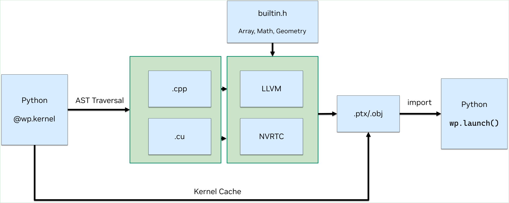

Basics¶
Initialization¶
When calling a Warp function like wp.launch() for the first time,
Warp will initialize itself and will print some startup information
about the compute devices available, driver versions, and the location for any
generated kernel code, e.g.:
Warp 1.2.0 initialized:
CUDA Toolkit 12.5, Driver 12.5
Devices:
"cpu" : "x86_64"
"cuda:0" : "NVIDIA GeForce RTX 3090" (24 GiB, sm_86, mempool enabled)
"cuda:1" : "NVIDIA GeForce RTX 3090" (24 GiB, sm_86, mempool enabled)
CUDA peer access:
Supported fully (all-directional)
Kernel cache:
/home/nvidia/.cache/warp/1.2.0
It’s also possible to explicitly initialize Warp with the wp.init() method:
import warp as wp
wp.init()
Kernels¶
In Warp, compute kernels are defined as Python functions and annotated with the @wp.kernel decorator:
@wp.kernel
def simple_kernel(a: wp.array(dtype=wp.vec3),
b: wp.array(dtype=wp.vec3),
c: wp.array(dtype=float)):
# get thread index
tid = wp.tid()
# load two vec3s
x = a[tid]
y = b[tid]
# compute the dot product between vectors
r = wp.dot(x, y)
# write result back to memory
c[tid] = r
Because Warp kernels are compiled to native C++/CUDA code, all the function input arguments must be statically typed. This allows Warp to generate fast code that executes at essentially native speeds. Because kernels may be run on either the CPU or GPU, they cannot access arbitrary global state from the Python environment. Instead they must read and write data through their input parameters such as arrays.
Warp kernels functions have a one-to-one correspondence with CUDA kernels.
To launch a kernel with 1024 threads, we use wp.launch():
wp.launch(kernel=simple_kernel, # kernel to launch
dim=1024, # number of threads
inputs=[a, b, c], # parameters
device="cuda") # execution device
Inside the kernel, we retrieve the thread index of the each thread using the wp.tid() built-in function:
# get thread index
i = wp.tid()
Kernels can be launched with 1D, 2D, 3D, or 4D grids of threads. To launch a 2D grid of threads to process a 1024x1024 image, we could write:
wp.launch(kernel=compute_image, dim=(1024, 1024), inputs=[img], device="cuda")
We retrieve a 2D thread index inside the kernel by using multiple assignment when calling wp.tid():
@wp.kernel
def compute_image(pixel_data: wp.array2d(dtype=wp.vec3)):
# get thread index
i, j = wp.tid()
Arrays¶
Memory allocations are exposed via the wp.array type. Arrays wrap an underlying memory allocation that may live in
either host (CPU), or device (GPU) memory. Arrays are strongly typed and store a linear sequence of built-in values
(float, int, vec3, matrix33, etc).
Arrays can be allocated similar to PyTorch:
# allocate an uninitialized array of vec3s
v = wp.empty(shape=n, dtype=wp.vec3, device="cuda")
# allocate a zero-initialized array of quaternions
q = wp.zeros(shape=n, dtype=wp.quat, device="cuda")
# allocate and initialize an array from a NumPy array
# will be automatically transferred to the specified device
a = np.ones((10, 3), dtype=np.float32)
v = wp.from_numpy(a, dtype=wp.vec3, device="cuda")
By default, Warp arrays that are initialized from external data (e.g.: NumPy, Lists, Tuples) will create a copy the data to new memory for the
device specified. However, it is possible for arrays to alias external memory using the copy=False parameter to the
array constructor provided the input is contiguous and on the same device. See the Interoperability
section for more details on sharing memory with external frameworks.
To read GPU array data back to CPU memory we can use array.numpy():
# bring data from device back to host
view = device_array.numpy()
This will automatically synchronize with the GPU to ensure that any outstanding work has finished, and will
copy the array back to CPU memory where it is passed to NumPy.
Calling array.numpy() on a CPU array will return a zero-copy NumPy view
onto the Warp data.
Please see the Arrays Reference for more details.
User Functions¶
Users can write their own functions using the @wp.func decorator, for example:
@wp.func
def square(x: float):
return x*x
Kernels can call user functions defined in the same module or defined in a different module. As the example shows, return type hints for user functions are optional.
Anything that can be done in a Warp kernel can also be done in a user function with the exception
of wp.tid(). The thread index can be passed in through the arguments of a user function if it is required.
Functions can accept arrays and structs as inputs:
@wp.func
def lookup(foos: wp.array(dtype=wp.uint32), index: int):
return foos[index]
Functions may also return multiple values:
@wp.func
def multi_valued_func(a: wp.float32, b: wp.float32):
return a + b, a - b, a * b, a / b
@wp.kernel
def test_multi_valued_kernel(test_data1: wp.array(dtype=wp.float32), test_data2: wp.array(dtype=wp.float32)):
tid = wp.tid()
d1, d2 = test_data1[tid], test_data2[tid]
a, b, c, d = multi_valued_func(d1, d2)
User functions may also be overloaded by defining multiple function signatures with the same function name:
@wp.func
def custom(x: int):
return x + 1
@wp.func
def custom(x: float):
return x + 1.0
@wp.func
def custom(x: wp.vec3):
return x + wp.vec3(1.0, 0.0, 0.0)
See Generic Functions for details on using typing.Any in user function signatures.
See Differentiability for details on how to define custom gradient functions, custom replay functions, and custom native functions.
User Structs¶
Users can define their own structures using the @wp.struct decorator, for example:
@wp.struct
class MyStruct:
pos: wp.vec3
vel: wp.vec3
active: int
indices: wp.array(dtype=int)
Structs may be used as a dtype for wp.arrays, and may be passed to kernels directly as arguments,
please see Structs Reference for more details.
Note
As with kernel parameters, all attributes of a struct must have valid type hints at class definition time.
Compilation Model¶
Warp uses a Python->C++/CUDA compilation model that generates kernel code from Python function definitions. All kernels belonging to a Python module are runtime compiled into dynamic libraries and PTX. The result is then cached between application restarts for fast startup times.
Note that compilation is triggered on the first kernel launch for that module.
Any kernels registered in the module with @wp.kernel will be included in the shared library.

By default, status messages will be printed out after each module has been loaded indicating basic information:
The name of the module that was just loaded
The first seven characters of the module hash
The device on which the module is being loaded for
How long it took to load the module in milliseconds
Whether the module was compiled
(compiled), loaded from the cache(cached), or was unable to be loaded(error).
For debugging purposes, wp.config.verbose = True can be set to also get a printout when each module load begins.
Here is an example illustrating the functionality of the kernel cache by running python3 -m warp.examples.sim.example_cartpole
twice. The first time, we see:
Warp 1.2.0 initialized:
CUDA Toolkit 12.5, Driver 12.5
Devices:
"cpu" : "x86_64"
"cuda:0" : "NVIDIA GeForce RTX 3090" (24 GiB, sm_86, mempool enabled)
"cuda:1" : "NVIDIA GeForce RTX 3090" (24 GiB, sm_86, mempool enabled)
CUDA peer access:
Supported fully (all-directional)
Kernel cache:
/home/nvidia/.cache/warp/1.2.0
Module warp.sim.collide 296dfb5 load on device 'cuda:0' took 17982.83 ms (compiled)
Module warp.sim.articulation b2cf0c2 load on device 'cuda:0' took 5686.67 ms (compiled)
Module warp.sim.integrator_euler b87aa18 load on device 'cuda:0' took 7753.78 ms (compiled)
Module warp.sim.integrator 036f39a load on device 'cuda:0' took 456.53 ms (compiled)
step took 0.06 ms
render took 4.63 ms
The second time we run this example, we see that the module-loading messages now say (cached) and take much
less time to load since code compilation is skipped:
Warp 1.2.0 initialized:
CUDA Toolkit 12.5, Driver 12.5
Devices:
"cpu" : "x86_64"
"cuda:0" : "NVIDIA GeForce RTX 3090" (24 GiB, sm_86, mempool enabled)
"cuda:1" : "NVIDIA GeForce RTX 3090" (24 GiB, sm_86, mempool enabled)
CUDA peer access:
Supported fully (all-directional)
Kernel cache:
/home/nvidia/.cache/warp/1.2.0
Module warp.sim.collide 296dfb5 load on device 'cuda:0' took 9.07 ms (cached)
Module warp.sim.articulation b2cf0c2 load on device 'cuda:0' took 4.96 ms (cached)
Module warp.sim.integrator_euler b87aa18 load on device 'cuda:0' took 3.69 ms (cached)
Module warp.sim.integrator 036f39a load on device 'cuda:0' took 0.39 ms (cached)
step took 0.04 ms
render took 5.05 ms
For more information, see the Code Generation section.
Language Details¶
To support GPU computation and differentiability, there are some differences from the CPython runtime.
Built-in Types¶
Warp supports a number of built-in math types similar to high-level shading languages,
e.g. vec2, vec3, vec4, mat22, mat33, mat44, quat, array.
All built-in types have value semantics so that expressions such as a = b
generate a copy of the variable b rather than a reference.
Strong Typing¶
Unlike Python, in Warp all variables must be typed. Types are inferred from source expressions and function signatures using the Python typing extensions. All kernel parameters must be annotated with the appropriate type, for example:
@wp.kernel
def simple_kernel(a: wp.array(dtype=vec3),
b: wp.array(dtype=vec3),
c: float):
Tuple initialization is not supported, instead variables should be explicitly typed:
# invalid
a = (1.0, 2.0, 3.0)
# valid
a = wp.vec3(1.0, 2.0, 3.0)
Limitations and Unsupported Features¶
See Limitations for a list of Warp limitations and unsupported features.